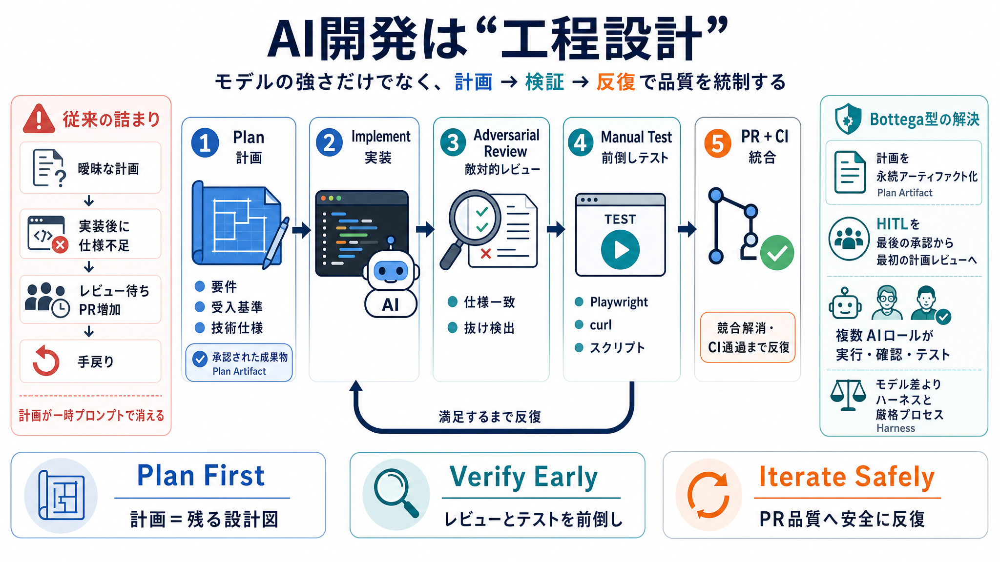

Claude Code vs Codex vs OpenCode: Which AI Coding Agent Is ...
# Claude Code vs Codex vs OpenCode: Which AI Coding Agent Is Actually The Best in 2026? [Sign in](https://medium.com/m/s…

AI開発は工程設計
LLMを「コーディングの代理人」として使うとき、品質を決めるのはモデルの強さだけではない——計画と検証を工程として編む必要があります。
後工程が詰まる
実装後に仕様不足が発覚すると、レビュー待ちでPRが積み上がり、手戻りが増えます。
受入基準・技術仕様が「一時的なガイド」で残らず、実装と共に成果物化しない。
敵対的レビュー（仕様一致確認）や手動テストでCI通過まで反復が長引く。
設計図を“残す”
計画（plan）を一時プロンプトで終わらせず、「承認され、実装・レビュー・テストへ流れる永続物」にします。
要件・受入基準・技術仕様をテンプレ化。
実装→敵対的レビュー→手動テストを連動。
反復（仕様一致まで）で欠落を潰す。
工程オーケストレーション
Bottegaは、計画→実装→テスト→コードレビュー→PR管理を複数AIロールに分担し、期待どおりまで回します。
計画と受入・レビューの“要所”を担う（HITLの移動）。
それ以外を主に実行し、反復で品質を寄せる。
回す順番が肝
Bottegaでは、計画が承認されてから実装へ進み、レビューとテストを前倒しで繰り返します。
要件・受入基準・技術仕様をテンプレート化→承認。
実装を実行。
敵対的レビュー：仕様一致・抜け/飛ばし検出。
手動テスト→PR競合解消・CI通過まで反復。
再現価値の核
失敗が後半で露呈する主因は「受入基準や仕様の見落とし」です。計画段階で潰すのが中核です。
計画と実装が一致しているかを確認する。
“満足するまで反復”するレビューで欠落を増やさない。
手動テスト（Playwright等）をPR前に組み込み実行。
使って分かった
筆者らはClaude Codeを1年以上利用し、速度だけでなくコード品質が向上したと述べています。
制作コードの100%をエージェントが執筆。
モデル強度より、ハーネスと厳格プロセスが結果を支配しやすい。
強さ依存を減らす
トークン課金や価格体系が変わっても、同じ運用が最適とは限りません。Bottegaは拡張性で吸収します。
Claude Code、Codex、OpenCodeなどを同一インターフェースで扱える。
同一タスク内でも役割に応じてモデルを切り替え可能。
誤設定でも耐える
モデル誤設定が2週間続いたバグに気づかないほど、品質が大きく崩れなかった経験があると述べています。
結論：ハーネスと厳格なプロセスがあれば “モデル差だけ”に頼りすぎない運用が成立しうる。
計画が消える
従来運用では、計画が「一時的なガイド」で終わり、要件・受入基準・技術仕様が実装成果物として残りません。
セッション内で計画が参照されるだけになりやすい（要件が永続しない）。
計画テンプレを第一級アーティファクトとして扱い、承認後に連動させる。
抜けを潰す
敵対的コードレビューエージェントは、計画テンプレの仕様どおりかを確認し、チェックリストの未完了を見つけます。
計画と実装が一致しているか。
仕様の省略・飛ばしを検出。
満足するまで反復して品質を安定化。
テストを前倒し
手動テストシナリオ（Playwright、curl、スクリプト実行など）を計画に組み込み、AIが実行します。
実装後に判明する問題の多くが、受入基準の見落としに由来した経験則。
PR前にCI通過へ寄せることで手戻りの主因を減らす。
導入の条件
価値は「AIにコードを書かせる」より、製品品質レベルに引き上げる開発工程設計にある。ただし前提が揃わないと同効果は出にくいです。
HITLを最初の計画レビューへ移し、再現性の高い手戻り削減に繋がる。
成功指標が定量提示されておらず、組織固有（テンプレ粒度・CI/テスト・レビュー文化）の影響が残る。
一言でまとめる
モデルを選ぶより先に、計画と受入基準を固め、敵対的レビューとテストでAI出力を“製品品質”に統制する——それがBottegaの要点です。
計画＝永続的成果物（plan artifact）。
仕様一致レビュー＋手動テストを前倒し。
PR/CI通過へ反復し、プロセスで品質を守る。
# Claude Code vs Codex vs OpenCode: Which AI Coding Agent Is Actually The Best in 2026? [Sign in](https://medium.com/m/s…
# Claude Code vs Codex App in 2026: Local Agent Pairing vs Cloud Agent Orchestration. A deep comparison of Claude Code a…
## Use saved searches to filter your results more quickly. # autonomous-agents. Autonomous agent substrate for Claude Co…
My GitHub AI Workflow: Codex + Claude Code Owain Lewis 12300 subscribers 139 likes 4104 views 28 May 2026 💬 Community: h…
| openclaw.plugin.json | | openclaw.plugin.json | | |. A runtime for coding agents. Wrap Claude Code, Codex, Gemini, C…